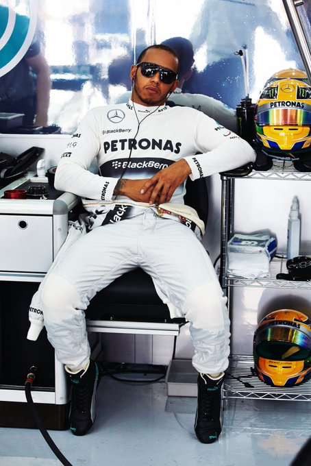
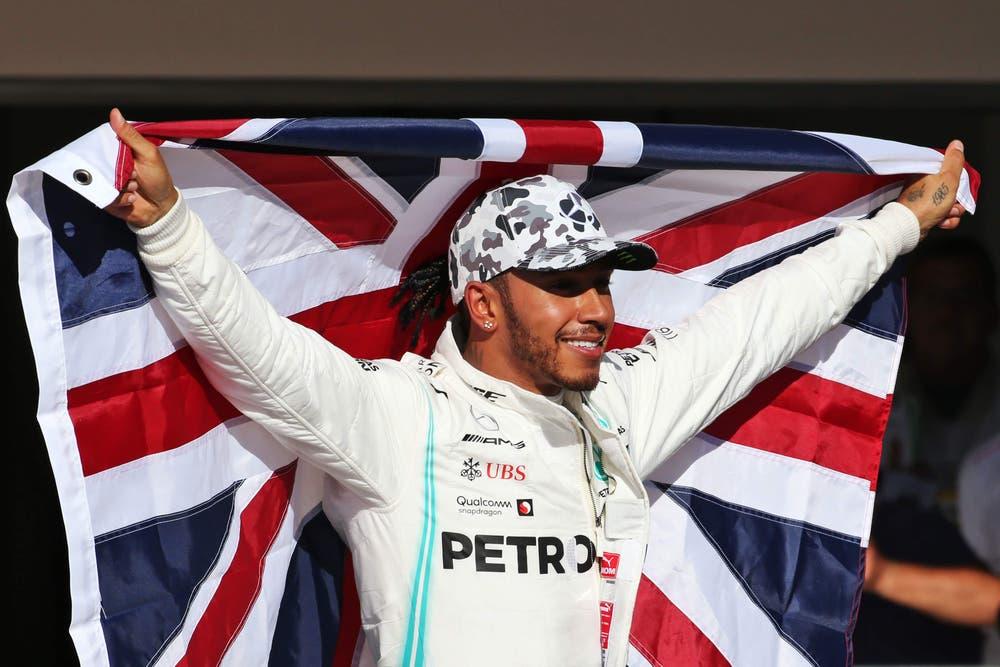

LEWIS HAMILTON
About
Lewis Hamilton is a British racing driver widely regarded as one of the greatest Formula 1 drivers of all time.
Born on January 7, 1985, in Stevenage, England, he made his F1 debut in 2007 with McLaren and won his first World Championship in 2008.
Hamilton later joined Mercedes in 2013, where he achieved unparalleled success,
winning a record-equalling seven World Championships (2008, 2014-2015, 2017-2020), tied with Michael Schumacher.
Known for his exceptional driving skills, relentless consistency, and versatility across various circuits,
Hamilton holds numerous records, including the most pole positions and Grand Prix victories in F1 history.
Off the track, he is an advocate for diversity, environmental sustainability, and social justice.
He's also known for his interest in fashion, music, and philanthropy, making him a global icon beyond motorsport.
STATS
Race Starts:356
Race Wins:105
Pole Positions:104
Podiums:202
Championship:7
Records
Most World Championships: Hamilton has secured seven World Drivers' Championships, a record he shares with Michael Schumacher
Most Career Wins: Hamilton holds the record for the most Grand Prix victories, with 104 wins.
Most Wins at the Same Grand Prix: He has triumphed nine times at the British Grand Prix (2008, 2014–2017, 2019–2021, 2024), the most by any driver at a single Grand Prix
Most Wins at the Same Circuit: Hamilton has achieved nine victories at Silverstone Circuit, corresponding with his British Grand Prix successes
Most Pole Positions: Hamilton has secured 103 pole positions, the highest in F1 history
Most Pole Positions at the Same Circuit: He has achieved nine pole positions at the Hungaroring, demonstrating particular prowess at this venue.
Most Podium Finishes: Hamilton has amassed 195 podium finishes, the most of any drive
Most Podiums at the Same Grand Prix: He has stood on the podium 14 times at the British Grand Prix
Most Consecutive Seasons with a Win: He has won at least one race in 15 consecutive seasons (2007–2021), a testament to his sustained competitiveness.
Most Consecutive Points Finishes: Hamilton finished in the points for 48 consecutive races from the 2018 British Grand Prix to the 2020 Bahrain Grand Prix
Most Wins with the Same Team: He has secured 84 wins driving for Mercedes, the most with a single team

First weekend With Mercedes

Add a description of the image here